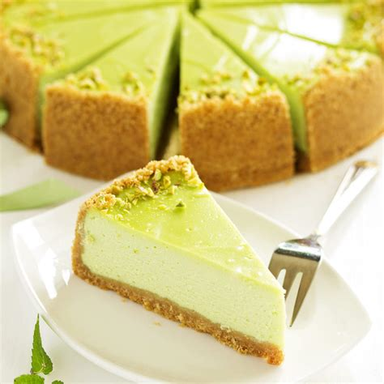

Tarta de queso y pistacho

Ingredientes
Para la base
- 450g de galletas maria
- 200g de mantequilla
- 1 huevo
Para la mezcla
- 250g de maicena
- 200g de queso philadelphia
- 2 yogures danone naturales
- 2 huevos
- 150g de azucar
- 1 sobre de levadura
Para la cubierta
- Pistachos troceados
- Crema Tacho
Preparación
- Preparar la base: machacar las galletas con un mortero y una vez
no hayan grumos, mezclarlas con la mantequilla y un huevo.
Nota:para que mezclarlo todo sea más fácil, derretir un poco
la mantequilla en el microondas.
- Poner la base en el recipiente: extender la masa por la base del
plato preferiblemente con las manos.
- Preparar la mezcla de la tarta: añadir todos los ingredientes de la
lista de loa mezcla (preferiblemente en el mismo orden) y mezclarlo todo hasta que se haga
una mezcla homogenea.
- Preparar la tarta para meterla en el horno: verter la mezcla en la base
de galleta que hemos hacheo anteriormente y poner la tarta en le horno prcalentado a 200ºC.
- Sacar del horno y decorar: tras 1 hora a 250ºC en horno, sacar la tarta,
untar la crema tacho por encima hasta cubrir toda la cubierta y decorar con pistachos troceados
los bordes.
Conoce la historia de este plato, y también, Más sobre la tarta de queso